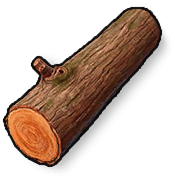

Matériaux
Objets · MatériauxBois
Wood

Wood / MatériauxComment l’obtenir
Comment l’obtenirRécolteS’obtient par la récolte
ButinS’obtient dans le butin
Récompenses / BoutiqueS’obtient en récompense ou en boutique
RecyclageObtenu en recyclant : Recycleur de ferraille du clan ×150, Carrière minière ×150, Carrière de mine de clan ×150, Grand portail extérieur en bois ×100, Scierie du clan ×100, La Tour de Bois ×100, Haut mur extérieur en bois ×75, Machette ×60, Réparer le placard ×50, Masse ×50, Table de recherche ×50, Four avancé ×37, Lance en bois ×25, Fusil de chasse ×25, Scie-étripeuse ×25, Porte double en bois ×25, Grande boîte de rangement ×25, W94 ×25, Lance en fer ×25, Lit ×20, Arbalète ×15, Fusil à deux canons ×15, Coffre de rangement ×12, Piège à fusil ×12, Massue à pointes en bois ×10, Serrure ×10, Porte en bois ×10, Marteau ×10, Pioche ×10, Arc en bois ×10, Hache ×10, Viseur Fait Main ×7, Fenêtre ×5, Torche ×5, Bougies ×5, Calendrier de l'Avent ×5, Hachette en pierre ×5, Ronde de nuit (Lampe citrouille) ×5, Gardien de la pléthore (Trophée de loup-garou) ×5, Carreau ×1, Planche ×1, Flèche ×1, Tête de bonhomme de neige ×1, Bâton ×1
Description de l’objet
Ressource de base pour la construction et le combustible. Récoltée sur les arbres.
Notes de fabrication
Une ressource de construction et de carburant de base. Récoltée en coupant des arbres, du bois mort et des bûches.